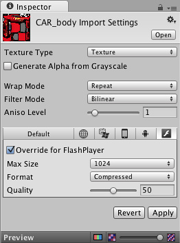

Flash: What is and is not supported
Supported
- Flash Player 11.2, 11.3 and 11.4
- Full ActionScript API Access
- Lightmapping
- Occlusion culling
- Editor Scripting (JavaScript / C# / Boo). Note: for JavaScript, use
#pragma strict.
- Custom shaders
- Animation / skinning
- Basic types like int, string, List
- Basic audio features, such as AudioSource / AudioListener
- Physics
- Navigation Meshes
- Substance Textures, however the textures are baked at build time so cannot be dynamically changed at runtime
- PlayerPrefs - On Flash PlayerPrefs are stored per SWF per machine
- UnityGUI classes that do not require text input
- Particle System (Shuriken) works and is script accessible
- Asset bundles - These are supported but caching of bundles (i.e. use of LoadFromCacheOrDownload) is not currently supported
- WWW and WWWForm
- Mecanim
Limited support
- Realtime shadows work, but do get affected by bugs in image effects
- Untyped variables in JavaScript and implicit type conversions
- Unity GUI / Immediate mode GUI
- Any .NET specific stuff. Do not use stuff from exotic class libraries (reflection, LINQ etc).
- GUIText wil have a dramatic impact on performance
Not Currently Supported
- Image Effects
- Unity profiler
- UnityGUI classes that require text input
- Raknet networking (if you need networking, you can write it in Action Script 3 directly, using flash API)
- Cloth
- VertexLit shaders currently do not support Spot Lights (they are treated just like point lights).
- Advanced audio features, such as audio effects
- Terrain
- Texture mipMapBias
- Non-triangle MeshTopology and wireframe rendering
- AsyncOperation
Won't be supported
- Sockets - It is possible to use ActionScript sockets by implementing them in AS3.
- Deferred rendering
Texture Support
We support jpeg textures, as well as RGBA / Truecolor. Textures which are jpg-xr compressed are not readable and thus not supported.
The compression ratio can be specified in the texture import under 'Override for FlashPlayer' setting. Compressed textures get converted to jpeg with the chosen compression ratio. The compression ratio is worth experimenting with since it can considerably reduce the size of the final SWF.

Texture quality ranges from 0 to 100, with 100 indicating no compression, and 0 the highest amount of compression possible.
The maximum supported texture resolution is 2048x2048.
Unavailable APIs
- UnityEngine.AccelerationEvent
- UnityEngine.Achievement
- UnityEngine.AchievementDescription
- UnityEngine.GameCenter
- UnityEngine.GcLeaderboard
- UnityEngine.IDList
- UnityEngine.ISocial
- UnityEngine.Leaderboard
- UnityEngine.LocalServices
- UnityEngine.RectOffset
- UnityEngine.Score
- UnityEngine.Security
- UnityEngine.Serialization.ListSerializationSurrogate
- UnityEngine.Serialization.UnitySurrogateSelector
- UnityEngine.Social
- UnityEngine.StackTraceUtility
- UnityEngine.TextEditor
- UnityEngine.Types
- UnityEngine.UnityException
- UnityEngine.UnityLogWriter
- UnityEngine.UserProfile
Page last updated: 2012-11-06